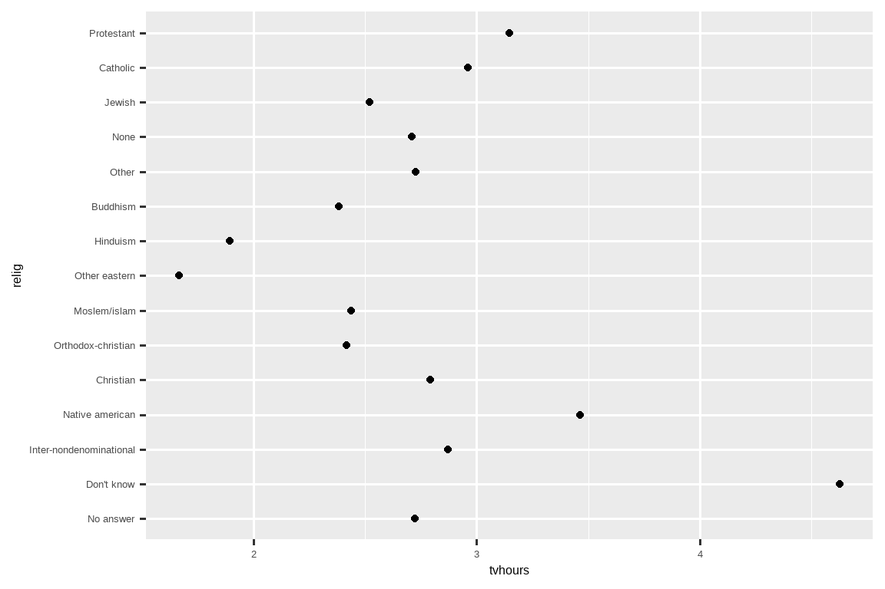
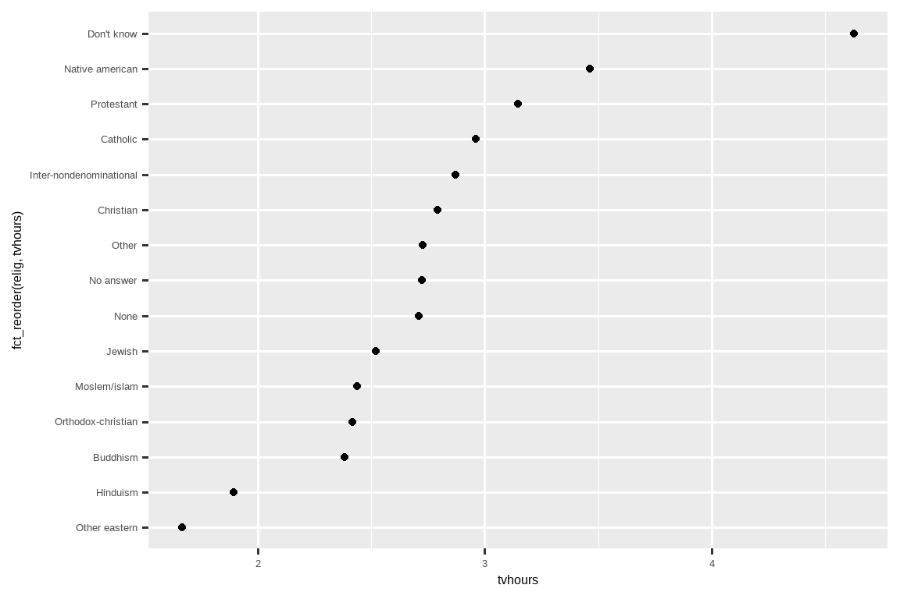
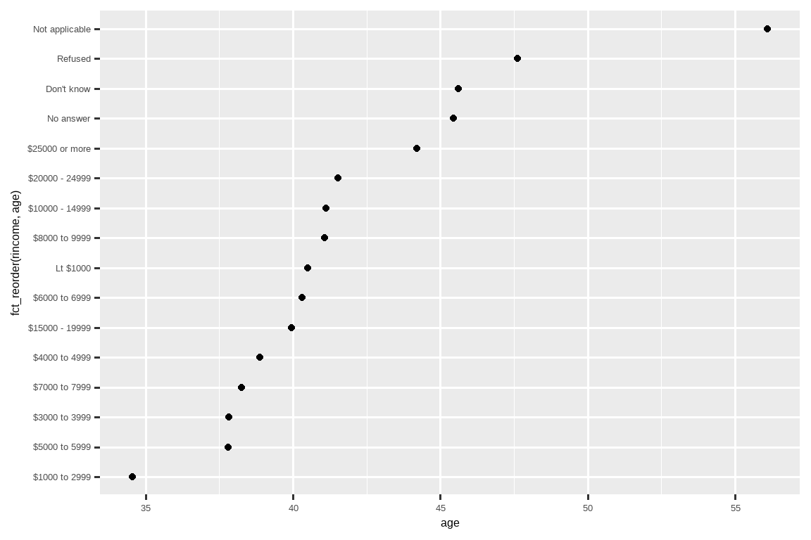
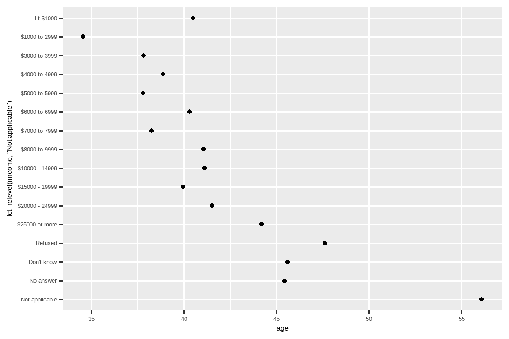
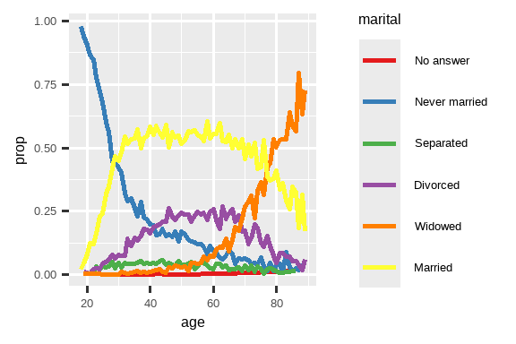
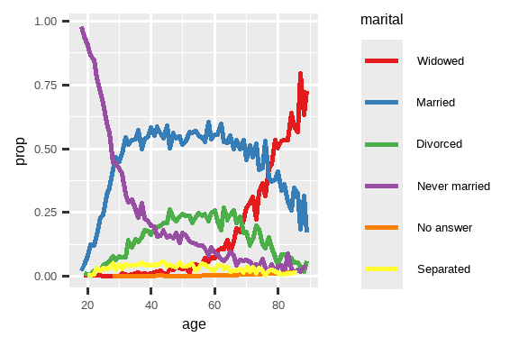
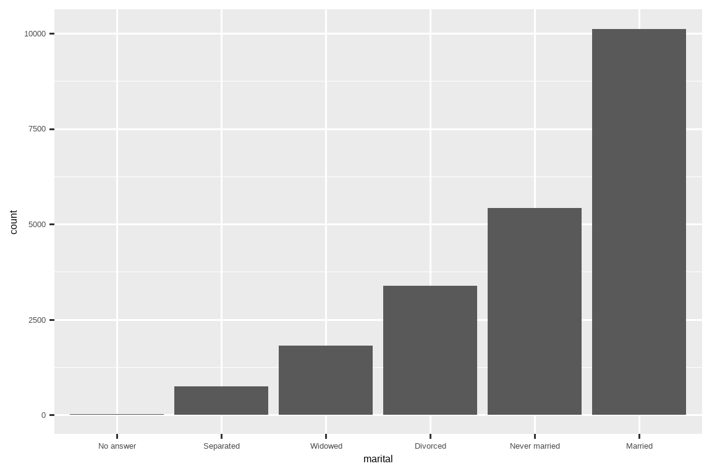

16 因子
16.1 引言
因子 (factor) 用于处理分类变量，即那些具有固定且已知的一组可能值的变量。当你希望以非字母顺序显示字符向量时，因子也很有用。
我们将首先阐述为什么数据分析需要因子1，以及你如何用 factor() 创建它们。接着，我们将向你介绍 gss_cat 数据集，其中包含大量分类变量供你试验。然后，你将使用该数据集练习修改因子的顺序和值，最后我们以讨论有序因子作为结束。
16.1.1 先决条件
R base 提供了一些创建和操作因子的基本工具。我们将用 forcats 包来补充这些工具，该包是核心 tidyverse 的一部分。它提供了一系列处理分类变量 (categorical variables) 的工具（并且它也是 factors 的一个字母重组词！），包含了大量用于处理因子的辅助函数。
16.2 因子基础
假设你有一个记录月份的变量：
x1 <- c("Dec", "Apr", "Jan", "Mar")使用字符串来记录这个变量有两个问题：
-
只有十二个可能的月份，但没有任何东西能防止你打字错误：
x2 <- c("Dec", "Apr", "Jam", "Mar") -
它的排序方式没有用处：
sort(x1) #> [1] "Apr" "Dec" "Jan" "Mar"
你可以用因子来解决这两个问题。要创建一个因子，你必须首先创建一个有效水平 (levels) 的列表：
month_levels <- c(
"Jan", "Feb", "Mar", "Apr", "May", "Jun",
"Jul", "Aug", "Sep", "Oct", "Nov", "Dec"
)现在你可以创建一个因子：
任何不在水平中的值都会被静默地转换为 NA：
y2 <- factor(x2, levels = month_levels)
y2
#> [1] Dec Apr <NA> Mar
#> Levels: Jan Feb Mar Apr May Jun Jul Aug Sep Oct Nov Dec这看起来有风险，所以你可能想改用 forcats::fct()：
y2 <- fct(x2, levels = month_levels)
#> Error in `fct()`:
#> ! All values of `x` must appear in `levels` or `na`
#> ℹ Missing level: "Jam"如果你省略了水平，它们将从数据中按字母顺序提取：
factor(x1)
#> [1] Dec Apr Jan Mar
#> Levels: Apr Dec Jan Mar按字母顺序排序有点风险，因为并非每台计算机都会以相同的方式对字符串进行排序。所以 forcats::fct() 会按首次出现的顺序排序：
fct(x1)
#> [1] Dec Apr Jan Mar
#> Levels: Dec Apr Jan Mar如果你需要直接访问有效的水平集，你可以使用 levels()：
levels(y2)
#> [1] "Jan" "Feb" "Mar" "Apr" "May" "Jun" "Jul" "Aug" "Sep" "Oct" "Nov" "Dec"你也可以在使用 readr 读取数据时，通过 col_factor() 创建一个因子：
csv <- "
month,value
Jan,12
Feb,56
Mar,12"
df <- read_csv(csv, col_types = cols(month = col_factor(month_levels)))
df$month
#> [1] Jan Feb Mar
#> Levels: Jan Feb Mar Apr May Jun Jul Aug Sep Oct Nov Dec16.3 综合社会调查
在本章的其余部分，我们将使用 forcats::gss_cat。这是来自综合社会调查 (General Social Survey) 的数据样本，该调查是由芝加哥大学的独立研究机构 NORC 进行的一项长期美国调查。该调查有数千个问题，在 gss_cat 中，Hadley 选择了一小部分，用以说明你在处理因子时会遇到的一些常见挑战。
gss_cat
#> # A tibble: 21,483 × 9
#> year marital age race rincome partyid
#> <int> <fct> <int> <fct> <fct> <fct>
#> 1 2000 Never married 26 White $8000 to 9999 Ind,near rep
#> 2 2000 Divorced 48 White $8000 to 9999 Not str republican
#> 3 2000 Widowed 67 White Not applicable Independent
#> 4 2000 Never married 39 White Not applicable Ind,near rep
#> 5 2000 Divorced 25 White Not applicable Not str democrat
#> 6 2000 Married 25 White $20000 - 24999 Strong democrat
#> # ℹ 21,477 more rows
#> # ℹ 3 more variables: relig <fct>, denom <fct>, tvhours <int>（请记住，由于这个数据集是由一个包提供的，你可以使用 ?gss_cat 获取更多关于变量的信息。）
当因子存储在 tibble 中时，你无法轻易看到它们的水平。一种查看它们的方法是使用 count()：
gss_cat |>
count(race)
#> # A tibble: 3 × 2
#> race n
#> <fct> <int>
#> 1 Other 1959
#> 2 Black 3129
#> 3 White 16395在处理因子时，两个最常见的操作是改变水平的顺序和改变水平的值。这些操作将在下面的章节中描述。
16.3.1 练习
探索
rincome（报告的收入）的分布。是什么使得默认的条形图难以理解？你如何改进这个图？在这次调查中，最常见的
relig（宗教）是什么？最常见的partyid（政党认同）是什么？denom（教派）适用于哪个relig？你如何通过表格找出答案？你如何通过可视化找出答案？
16.4 修改因子顺序
在可视化中改变因子水平的顺序通常很有用。例如，假设你想探索不同宗教每天平均观看电视的小时数：
relig_summary <- gss_cat |>
group_by(relig) |>
summarize(
tvhours = mean(tvhours, na.rm = TRUE),
n = n()
)
ggplot(relig_summary, aes(x = tvhours, y = relig)) +
geom_point()
这个图很难读，因为没有整体模式。我们可以通过使用 fct_reorder() 来重新排序 relig 的水平来改进它。fct_reorder() 接受三个参数：
-
.f，你想要修改其水平的因子。 -
.x，你想要用来重新排序水平的数值向量。 - 可选的
.fun，一个函数，如果.f的每个值对应多个.x的值，则使用该函数。默认值是median。
ggplot(relig_summary, aes(x = tvhours, y = fct_reorder(relig, tvhours))) +
geom_point()
重新排序宗教使得更容易看出“不知道”类别的人看电视的时间要多得多，而印度教和其他东方宗教的人看电视的时间要少得多。
当你开始进行更复杂的转换时，我们建议将它们从 aes() 中移出，放到一个单独的 mutate() 步骤中。例如，你可以像下面这样重写上面的图：
relig_summary |>
mutate(
relig = fct_reorder(relig, tvhours)
) |>
ggplot(aes(x = tvhours, y = relig)) +
geom_point()如果我们创建一个类似的图，看看平均年龄在不同报告收入水平上是如何变化的呢？
rincome_summary <- gss_cat |>
group_by(rincome) |>
summarize(
age = mean(age, na.rm = TRUE),
n = n()
)
ggplot(rincome_summary, aes(x = age, y = fct_reorder(rincome, age))) +
geom_point()
在这里，任意重新排序水平不是一个好主意！这是因为 rincome 已经有了一个我们不应该打乱的原则性顺序。请将 fct_reorder() 保留给那些水平是任意排序的因子。
然而，将“不适用 (Not applicable)”和其他特殊水平一起移到前面是有意义的。你可以使用 fct_relevel()。它接受一个因子 .f，然后是任意数量的你想要移到最前面的水平。
ggplot(rincome_summary, aes(x = age, y = fct_relevel(rincome, "Not applicable"))) +
geom_point()
你认为为什么“不适用”的平均年龄这么高？
当你在图上为线条着色时，另一种类型的重新排序也很有用。fct_reorder2(.f, .x, .y) 通过与最大 .x 值相关联的 .y 值来重新排序因子 .f。这使得图更容易阅读，因为图右侧的线条颜色将与图例对齐。
by_age <- gss_cat |>
filter(!is.na(age)) |>
count(age, marital) |>
group_by(age) |>
mutate(
prop = n / sum(n)
)
ggplot(by_age, aes(x = age, y = prop, color = marital)) +
geom_line(linewidth = 1) +
scale_color_brewer(palette = "Set1")
ggplot(by_age, aes(x = age, y = prop, color = fct_reorder2(marital, age, prop))) +
geom_line(linewidth = 1) +
scale_color_brewer(palette = "Set1") +
labs(color = "marital")

最后，对于条形图，你可以使用 fct_infreq() 按频率降序排列水平：这是最简单的重新排序类型，因为它不需要任何额外的变量。如果你希望它们按频率升序排列，可以与 fct_rev() 结合使用，这样在条形图中最大的值就会在右边，而不是左边。
gss_cat |>
mutate(marital = marital |> fct_infreq() |> fct_rev()) |>
ggplot(aes(x = marital)) +
geom_bar()
16.4.1 练习
tvhours中有一些可疑的高数值。均值是一个好的汇总统计量吗？对于
gss_cat中的每个因子，判断其水平的顺序是任意的还是有原则的。为什么将“不适用 (Not applicable)”移到水平的前面会使它移动到图的底部？
16.5 修改因子水平
比改变水平顺序更强大的是改变它们的值。这可以让你为出版物澄清标签，并为高层次的展示折叠水平。最通用和最强大的工具是 fct_recode()。它允许你重编码或更改每个水平的值。例如，以 gss_cat 数据框中的 partyid 变量为例：
gss_cat |> count(partyid)
#> # A tibble: 10 × 2
#> partyid n
#> <fct> <int>
#> 1 No answer 154
#> 2 Don't know 1
#> 3 Other party 393
#> 4 Strong republican 2314
#> 5 Not str republican 3032
#> 6 Ind,near rep 1791
#> # ℹ 4 more rows这些水平很简短且不一致。让我们调整它们，让它们更长并使用平行的结构。像 tidyverse 中大多数重命名和重编码函数一样，新值在左边，旧值在右边：
gss_cat |>
mutate(
partyid = fct_recode(partyid,
"Republican, strong" = "Strong republican",
"Republican, weak" = "Not str republican",
"Independent, near rep" = "Ind,near rep",
"Independent, near dem" = "Ind,near dem",
"Democrat, weak" = "Not str democrat",
"Democrat, strong" = "Strong democrat"
)
) |>
count(partyid)
#> # A tibble: 10 × 2
#> partyid n
#> <fct> <int>
#> 1 No answer 154
#> 2 Don't know 1
#> 3 Other party 393
#> 4 Republican, strong 2314
#> 5 Republican, weak 3032
#> 6 Independent, near rep 1791
#> # ℹ 4 more rowsfct_recode() 会保持未明确提及的水平不变，并且如果你意外地引用了不存在的水平，它会警告你。
要组合组别，你可以将多个旧水平分配给同一个新水平：
gss_cat |>
mutate(
partyid = fct_recode(partyid,
"Republican, strong" = "Strong republican",
"Republican, weak" = "Not str republican",
"Independent, near rep" = "Ind,near rep",
"Independent, near dem" = "Ind,near dem",
"Democrat, weak" = "Not str democrat",
"Democrat, strong" = "Strong democrat",
"Other" = "No answer",
"Other" = "Don't know",
"Other" = "Other party"
)
)请谨慎使用这种技术：如果你将真正不同的类别组合在一起，你最终会得到误导性的结果。
如果你想折叠很多水平，fct_collapse() 是 fct_recode() 的一个有用变体。对于每个新变量，你可以提供一个旧水平的向量：
gss_cat |>
mutate(
partyid = fct_collapse(partyid,
"other" = c("No answer", "Don't know", "Other party"),
"rep" = c("Strong republican", "Not str republican"),
"ind" = c("Ind,near rep", "Independent", "Ind,near dem"),
"dem" = c("Not str democrat", "Strong democrat")
)
) |>
count(partyid)
#> # A tibble: 4 × 2
#> partyid n
#> <fct> <int>
#> 1 other 548
#> 2 rep 5346
#> 3 ind 8409
#> 4 dem 7180有时你只是想把小的组别集中在一起，以简化图表或表格。这就是 fct_lump_*() 系列函数的工作。fct_lump_lowfreq() 是一个简单的起点，它逐步将最小的组别类别归入“Other”，并始终保持“Other”为最小的类别。
gss_cat |>
mutate(relig = fct_lump_lowfreq(relig)) |>
count(relig)
#> # A tibble: 2 × 2
#> relig n
#> <fct> <int>
#> 1 Protestant 10846
#> 2 Other 10637在这种情况下，它不是很有帮助：这次调查中大多数美国人确实是新教徒，但我们可能想看到更多细节！相反，我们可以使用 fct_lump_n() 来指定我们想要恰好 10 个组别：
gss_cat |>
mutate(relig = fct_lump_n(relig, n = 10)) |>
count(relig, sort = TRUE)
#> # A tibble: 10 × 2
#> relig n
#> <fct> <int>
#> 1 Protestant 10846
#> 2 Catholic 5124
#> 3 None 3523
#> 4 Christian 689
#> 5 Other 458
#> 6 Jewish 388
#> # ℹ 4 more rows阅读文档以了解 fct_lump_min() 和 fct_lump_prop()，它们在其他情况下很有用。
16.5.1 练习
认同为民主党、共和党和独立派的人的比例随时间有何变化？
你如何将
rincome折叠成一小组类别？注意在上面的
fct_lump示例中有 9 个组（不包括 other）。为什么不是 10 个？（提示：输入?fct_lump，找到other_level参数的默认值是 “Other”。）
16.6 有序因子
在继续之前，有必要简要提及一种特殊类型的因子：有序因子 (ordered factors)。用 ordered() 函数创建的有序因子意味着水平之间存在严格的顺序，但没有指定水平之间差异的大小。当你知道水平有排名，但没有精确的数值排名时，你会使用有序因子。
当一个有序因子被打印时，你可以识别它，因为它在因子水平之间使用 < 符号：
在 R base 和 tidyverse 中，有序因子的行为与常规因子非常相似。只有在两个地方你可能会注意到不同的行为：
- 如果你在 ggplot2 中将一个有序因子映射到颜色或填充，它将默认为
scale_color_viridis()/scale_fill_viridis()，这是一个暗示排名的颜色标度。 - 如果你在线性模型中使用一个有序预测变量，它将使用“多项式对比”。这些有点用，但除非你有统计学博士学位，否则你不太可能听说过它们，即使那样，你可能也不常解释它们。如果你想了解更多，我们推荐 Lisa DeBruine 的
vignette("contrasts", package = "faux")。
就本书而言，正确区分常规因子和有序因子并不是特别重要。然而，在更广泛的范围内，某些领域（特别是社会科学）确实广泛使用有序因子。在这些背景下，正确识别它们很重要，以便其他分析包可以提供适当的行为。
16.7 总结
本章向你介绍了用于处理因子的便捷 forcats 包，并介绍了最常用的函数。forcats 包含了我们没有篇幅在这里讨论的各种其他辅助函数，所以每当你遇到以前没有遇到过的因子分析挑战时，我强烈建议你浏览一下参考索引，看看是否有现成的函数可以帮助解决你的问题。
如果你在阅读本章后想了解更多关于因子的信息，我们推荐阅读 Amelia McNamara 和 Nicholas Horton 的论文 Wrangling categorical data in R。这篇论文阐述了在 stringsAsFactors: An unauthorized biography 和 stringsAsFactors = <sigh> 中讨论的一些历史，并比较了本书中概述的 tidyverse 分类数据处理方法与 R base 方法。该论文的早期版本帮助激发和确定了 forcats 包的范围；感谢 Amelia 和 Nick！
在下一章中，我们将转换方向，开始学习 R 中的日期和时间。日期和时间看起来 deceptively 简单，但你很快就会看到，你对它们了解得越多，它们似乎就变得越复杂！
它们对于建模也非常重要。↩︎